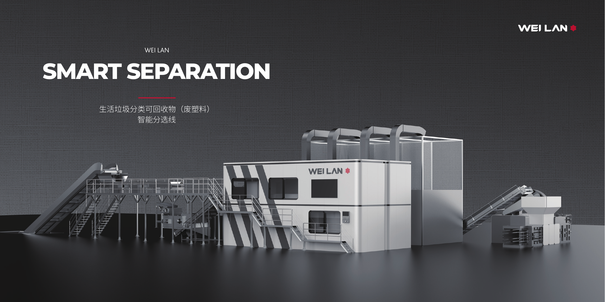

Material and color recognition
Targets transparent, green, blue, and mixed-color PET bottles, white HDPE, PP, and other mixed recyclables.
AI Optical Sorting Machine
The WEI LAN super optical sorting system identifies PET bottles, HDPE bottles, PP, and other mixed plastics by material and color. Modular configurations support compact recycling facilities that need fast deployment and stable continuous sorting.

Sorting Performance
Multi-stage sorting combines optical recognition, intelligent bins, cyclic material handling, and a digital management platform.
Targets transparent, green, blue, and mixed-color PET bottles, white HDPE, PP, and other mixed recyclables.
Brochure-listed sorting rate supports precise recovery for plastic recycling centers and municipal recyclable sorting projects.
Mini, Standard, and Plus layouts provide 0.6-2 t/h processing capacity with skid-mounted installation.
Monitor equipment status, alarms, sorting statistics, cumulative runtime, carbon indicators, and video feeds.
Process Overview
The optical sorting system is organized around a clear material path so buyers can evaluate where recognition, sorting, baling, and operating data fit into the production line.
Input post-consumer bottles or mixed recyclable plastics into the sorting line at a controlled rate.
Remove obvious impurities and prepare the material stream for stable downstream recognition.
Identify material type and color characteristics across PET, HDPE, PP, and mixed plastic streams.
Separate plastics by target resin category to improve recovery value and reduce manual dependency.
Group PET bottles and other target materials by color where project value depends on cleaner fractions.
Prepare sorted output for storage, logistics, or downstream recycling plant handoff.
Track throughput, categories, equipment status, alerts, and carbon-related operating indicators.